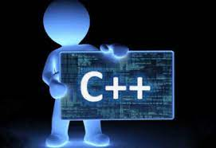
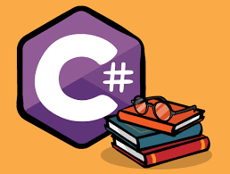
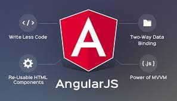
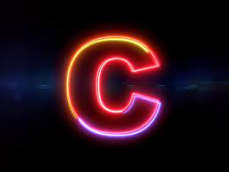

Technology, the application of scientific knowledge to the practical aims of human life or, as it is sometimes phrased, to the change and manipulation of the human environment.Technology can be most broadly defined as the entities, both material and immaterial, created by the application of mental and physical effort in order to achieve some value.
C Technology

C programming is a general-purpose, procedural, imperative computer programming language developed in 1972 by Dennis M. Ritchie at the Bell Telephone Laboratories to develop the UNIX operating system.C is the most widely used computer language. It keeps fluctuating at number one scale of popularity along with Java programming language, which is also equally popular and most widely used among modern software programmers.
C programming language is a MUST for students and working professionals to become a great Software Engineer specially when they are working in Software Development Domain. I will list down some of the key advantages of learning C Programming:
- Easy to learn
- Structured language
- It produces efficient programs
- It can handle low-level activities
- It can be compiled on a variety of computer platforms
C++ Technology
C++ is a cross-platform language that can be used to create high-performance applications. C++ was developed by Bjarne Stroustrup, as an extension to the C language. C++ gives programmers a high level of control over system resources and memory.
C++ is an object-oriented programming language which gives a clear structure to programs and allows code to be reused, lowering development costs.
- Portability
- Mid-level programming language
- Object-Oriented
- Multi-paradigm programming language
- Memory Management
- Fast and Powerful
- Standard Library
- Wide Range of Applications
- Huge Community
Java Technology

Java is a high-level, class-based, object-oriented programming language that is designed to have as few implementation dependencies as possible. It is a general-purpose programming language intended to let programmers write once, run anywhere (WORA),meaning that compiled Java code can run on all platforms that support Java without the need for recompilation.
Java was originally developed by James Gosling at Sun Microsystems (which has since been acquired by Oracle) and released in 1995 as a core component of Sun Microsystems' Java platform.
- Applications such as acrobat reader, media player, antivirus, etc.
- Web Applications such as irctc.co.in, javatpoint.com, etc.
- Enterprise Applications such as banking applications.
- Mobile
- Embedded System
- Smart Card Robotics Games, etc.
C# Technology
C# is pronounced "C-Sharp". It is an object-oriented programming language created by Microsoft that runs on the .NET Framework. C# has roots from the C family, and the language is close to other popular languages like C++ and Java. The first version was released in year 2002. The latest version, C# 8, was released in September 2019.
It is one of the most popular programming language in the world
- Mobile applications
- Desktop applications
- Web applications
- Web services
- Web sites
- Games
- VR
- Database applications
- And much, much more!
Python Technology

Python is a popular programming language. It was created by Guido van Rossum, and released in 1991.Python has syntax that allows developers to write programs with fewer lines than some other programming languages. Python runs on an interpreter system, meaning that code can be executed as soon as it is written. This means that prototyping can be very quick.
Python can be used for rapid prototyping, or for production-ready software development.
- web development (server-side)
- software development
- mathematics
- system scripting.
Angular Technology
Angular is an application design framework and development platform for creating efficient and sophisticated single-page apps. These Angular docs help you learn and use the Angular framework and development platform, from your first application to optimizing complex single-page apps for enterprises. Tutorials and guides include downloadable examples to accelerate your projects.
This topic can help you understand Angular: what Angular is, what advantages it provides, and what you might expect as you start to build your applications.
- A component-based framework for building scalable web applications
- A collection of well-integrated libraries that cover a wide variety of features, including routing, forms management, client-server communication, and more
- A suite of developer tools to help you develop, build, test, and update your code
Ionic Technology

Ionic is open source Javascript framework used for building cross platform or Hybrid mobile applications for all the main mobile platforms, including iOS, Android, and Windows.Ionic is built on top of AngularJS and Apache Cordova.
Ionic comes with native like UI elements and layout that helps you building more native-feeling mobile apps using web technologies like HTML5, CSS, Sass, and Javascript.
- Free and Open source: To develop hybrid app, Ionic is the best and 100 % free, open source framework licensed under MIT.
- Cross Platform Development
- UX/UI Design
- Easy testing
- Full Utilization of Cordova Plugins
